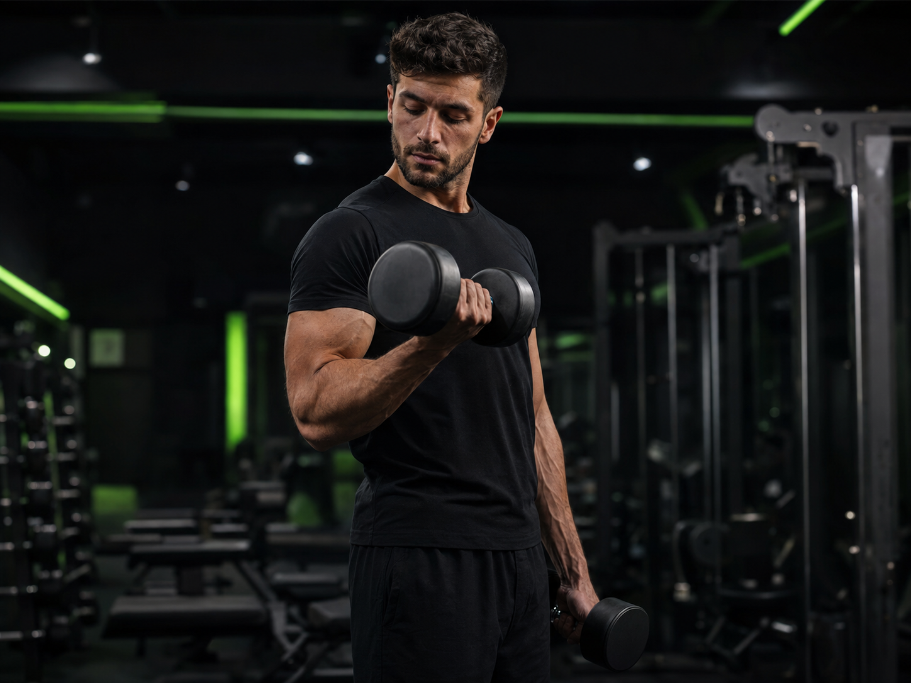
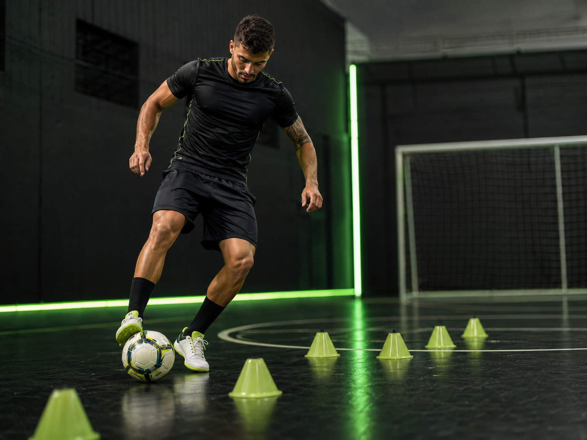
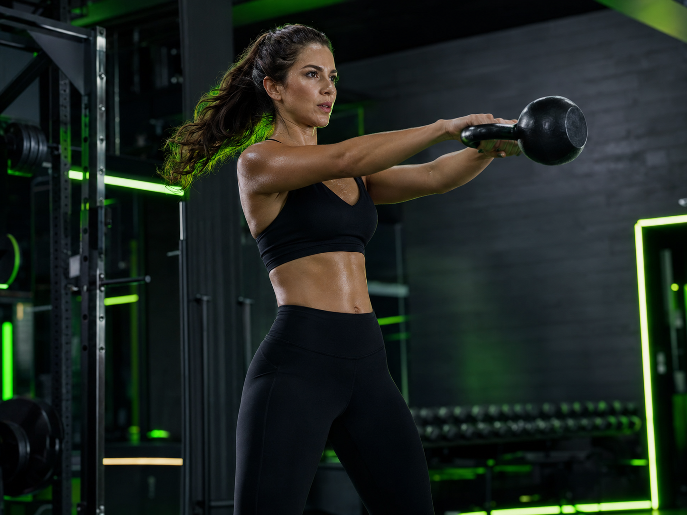
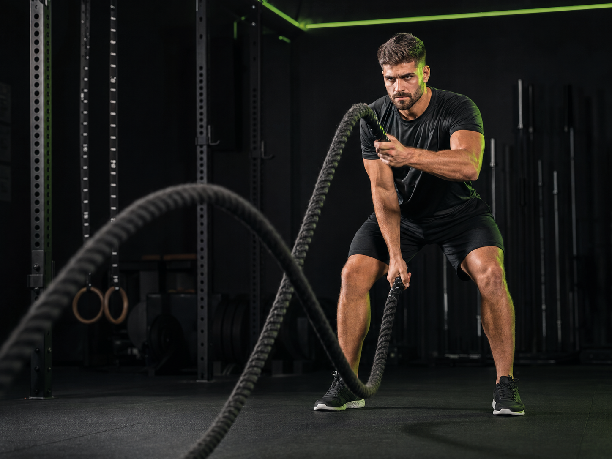

Presencial & Online

Hipertrofia
Estratégia, técnica apurada e progressão de carga para ganho consistente de massa muscular.
Saber mais →
Treinamento personalizado presencial e consultoria online para quem quer evoluir no corpo, no jogo e na rotina.
Especialidades

Estratégia, técnica apurada e progressão de carga para ganho consistente de massa muscular.
Saber mais →
Treinos dinâmicos e adaptados para queima calórica eficiente, disposição e saúde.
Saber mais →
Ganho de força, mobilidade, estabilidade e resistência para a rotina diária e performance.
Saber mais →Treinamento individualizado de futebol e futsal: técnica, velocidade, agilidade e tomada de decisão.
Saber mais →

Sobre Walace Eduardo
Com a vivência intensa das quadras profissionais de futsal e o conhecimento técnico da preparação física, Walace oferece um acompanhamento de alto padrão totalmente adaptado ao seu nível.
Seja para sair do zero, conquistar a estética desejada ou aprimorar o desempenho no campo e no futsal, cada treino é desenhado com metodologia, segurança e foco em resultados reais.
Por que escolher o treino personalizado?
Treinos em Ação
Treino de verdade não é fórmula pronta. É presença, ajuste constante e disciplina contínua para alcançar a sua melhor versão física e mental.
Tire Suas Dúvidas
Os treinos presenciais são realizados em academias parceiras, condomínios ou espaços ao ar livre, combinados diretamente de acordo com a sua preferência e localização.
Na consultoria online, você recebe uma planilha de treinos 100% personalizada conforme seu objetivo e equipamentos disponíveis. O acompanhamento é feito com envio de vídeos para correção de postura e suporte constante via WhatsApp.
É indicado tanto para jovens atletas em formação quanto para jogadores amadores e profissionais que desejam aprimorar técnica individual, passe, controle de bola, agilidade e condicionamento de jogo.
Não! Os treinos são totalmente adaptados ao seu nível atual, desde quem está começando do zero até quem já treina e quer potencializar seus resultados.
Pronto para começar?
Entre em contato diretamente pelo WhatsApp para agendar sua avaliação e conversar sobre o treino ideal para a sua rotina.